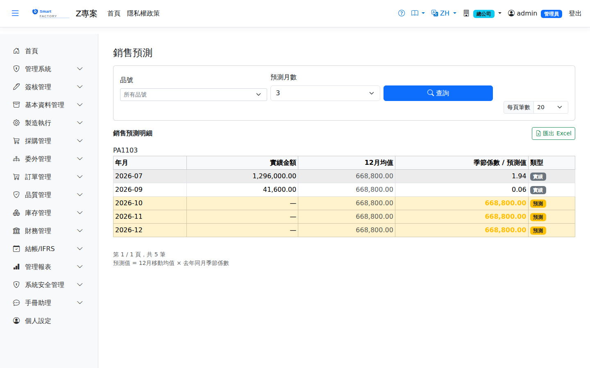

銷售預測Sales Forecast
路由：/SalesForecast | 依歷史銷售訂單的銷售預測Route: /SalesForecast | Sales forecast from historical sales orders
以歷史出貨資料推估未來期間的銷售量/金額趨勢，供備料與產能規劃參考。Estimates sales quantity and amount for future periods from historical shipments, as input to material and capacity planning.

銷售預測畫面截圖（示意，實際欄位/資料依權限與查詢條件而異）Sales forecast screenshot (illustrative; actual fields and data vary by permission and query criteria)
查詢Search
1
查詢列輸入條件後點「查詢」；欄位標題可點擊排序，清單下方有分頁導航。Enter your criteria on the query bar and click "Search"; column headers can be clicked to sort, and the paging controls sit below the list.
欄位說明Field reference
查詢條件Query criteria
| 條件Condition | 說明Guide |
|---|---|
| 品號Item | 要預測的料件Item to forecast |
| 預測月數Forecast Months | 要往後推估的月份數；月數越多不確定性越高Number of months to project forward; the further out, the greater the uncertainty |
報表欄位Report fields
| 欄位Field | 說明Guide |
|---|---|
| 年月Month | 歷史實績或預測的月份Month of the historical actual or the forecast |
| 實績金額Actual | 該月銷售訂單的本幣未稅金額（依下單日，不含草稿與駁回的訂單）；沒有銷售的月份顯示 0。只列最近 12 個完整月份，本月未結束不列入；預測月份此欄為「—」Local-currency net amount of sales orders in the month (by order date, excluding draft and rejected orders); months with no sales show 0. Only the last 12 complete months are listed and the current, unfinished month is left out; forecast months show "—" |
| 12月均值12M Avg | 最近 12 個完整月份的實績合計 ÷ 12（沒有銷售的月份以 0 計），作為去除季節性後的基準水準Total actuals of the last 12 complete months ÷ 12 (months with no sales count as 0), the base level with seasonality removed |
| 季節係數Seasonal Index | 實績月為該月實績 ÷ 12月均值；預測月取去年同月的係數。品號銷售史未滿一年時沒有季節係數（顯示「—」）For actual months, that month's actual ÷ 12M average; for forecast months, the index of the same month last year. Items with less than a year of sales history have no seasonal index (shown as "—") |
| 預測值Forecast | 預測月才有：12月均值 × 季節係數；沒有季節係數時即為 12月均值。預測從本月起算Forecast months only: 12M average × seasonal index, or the 12M average itself when there is no index. Forecasting starts from the current month |
| 類型Type | 標示該列為「實績」或「預測」Marks the row as actual or forecast |